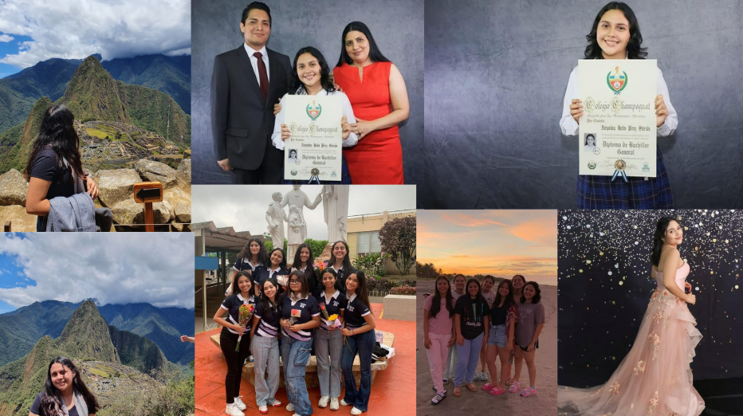

Mi infancia
Nací el 16 de Marzo de 2006, un jueves para ser exacta, los recuerdos de los primeros años de mi vida no los tengo presentes. Sin embargo, recuerdo que cuando era pequeña uno de mis mayores sueños era ir al colegio, veía tantas series y peliculas que sucedian en colegios y universidades. El día que mi abuelo me dijo que iría al colegio fue uno de los más felices para mi. Cuando tenía 3 años me hice mi primera y unica cicatriz, recuerdo que iba saltando y cantando y de la nada me tropece y caí sobre un pedazo de vidrio en la rodilla, de los primeros dolores fuertes que sentí también, o al menos del que me acuerdo. Ya que mi hermana me ha contado que de pequeña una vez convulsione de un dolor que sentía. No obstante, hay más cosas que destacar, recuerdo que de pequeña disfrutaba mucho jugar con muñecas, tenía muchas y las usaba todas, recuerdo también que me gustaba ver series o peliculas de Disney, pero sin duda lo que más me gustaba era hablar.
Cuando empece el kinder disfrutaba mucho el tiempo que pasaba ahí, ya que disfrutaba jugar con mis compañeros. Puedo decir que me encantaba ir al colegio, disfrutaba mucho el tiempo que compartía con los demás e incluso las clases. Recuerdo también que me gustaba mucho hacer exposiciones y participar en todas las actividades. En resumen, tuve una infancia bastante feliz, la recuerdo con mucho cariño e ilusión, no siempre todo era color de rosa, sin embargo, elijo recordar y atesorar los buenos momentos, ya que son los que han ido forjando lo que soy.
.png)
Adolescencia
Mi adolescencia fue un poco más complicada, hubo varios momentos tristes, pero también felices, recuerdo que cuando me cambie de colegio fue una de las epocas que me hicieron aprender y crecer bastante. El tener que volver a hacer amigos, conocer gente e incluso aprender una nueva forma de estudios. Adaptarme fue una de las cosas más dificiles, no sabía a quienes hablarle, me costaba muchisimo poder estudiar pues todo el tiempo me sentía triste, ya que este cambio no solo fue de colegio sino de varios aspectos en mi vida.En este momento sentía que la gente se había vuelto cruel y que me costaba muchisimo seguirles el paso y al mismo tiempo fingir que sus comentarios no me dolían. Luego fue pandemia, en pandemia aprendí muchismas cosas sobre mi, descubrí nuevos hobbies y mejore mis sentimientos. Cuando volvimos de pand3mia, hice nuevos amigos, tuve más confianza en mi, fueron buenos años, a pesar de todo.

Juventud
Esta es mi etapa actual. Estoy en la universidad, al igual que en la adolescencia hay muchos cambios pasando constantemente en mi vida, he aprendido muchas cosas en todo lo que he vivido, aunque parezca poco para otros, es todo lo que conozco. Estoy estudiando Ingenieria en Software y Negocios Digitales, estoy en segundo año.
Aunque he tenido varios problemas y situaciones que para mi han sido catastroficas, puedo decir que me siento agradecida y feliz por cada una de las personas, momentos y aventuras que he tenido en mi vida, aun me falta mucho por conocer y se que poco a poco llegaran cosas nuevas, desafios nuevos, pero también buenas cosas que me ayudaran a seguir creciendo.
Logros
He tenido varios logros en mi vida, algunos más grandes que otros, pero todos han sido importantes para mi. Uno de los logros más grandes que he tenido fue entrar a la universidad, ya que es algo que siempre quise y me costó mucho esfuerzo y dedicación. Otro logro importante fue graduarme del colegio. También he tomado clases de algunos idiomas como inglés, italiano, alemán y frances, aunque aún debo practicar estos pues con los años los he ido olvidando. Otro de mis logros, más bien sueño, es haber ido a Machu Picchu. También he logrado hacer buenos amigos y participar en diversas actividades que han servido para mi formación personal y de cierta manera profesional.
